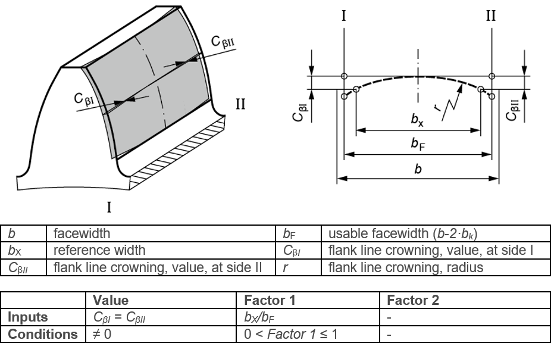

|
|
|


齿向鼓形修形
图（参见图 15.51）显示了齿向图中定义的齿向鼓形修形。值和系数 1设置也显示在该图中。该修形应用于齿轮的有效齿宽。
齿向鼓形修形是指，从齿廓保持不变的共同起点开始，沿齿宽方向持续且对称地去除材料。材料以弧形方式去除，其最大值位于点 bF/2。Cβ = CβI = CβII 适用。
注意
齿向鼓形修形（其最大值位于点 bF /2 的右侧）在实践中经常使用，即偏心的齿向鼓形修形。

图 15.51：齿向鼓形修形
Flank line crowning
Figure (see Figure 15.51) shows the flank line crowning as defined in the flank line diagram. The Value and Factor 1 settings are also shown in this figure. The modification is applied over the effective facewidth of the gear.
Flank line crowning occurs where material is removed constantly, and symmetrically, in the direction of the facewidth, starting from a common point at which the tooth profile remains unchanged. The material is removed in an arc-like manner, with its maximum located at point bF/2. Cβ = CβI = CβII applies.
Note
Flank line crowning, with its maximum to the right of point bF /2, is often used in practice Flank line crowning, eccentric.
Figure 15.51: Flank line crowning